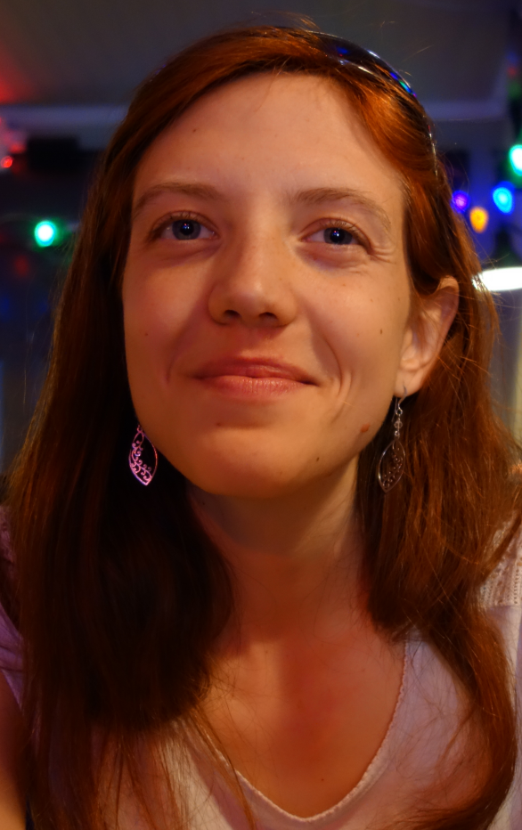

Coralie Picoche

I am currently a PhD student at the Institute of Mathematics of Bordeaux, working on fine-scale modelling of phytoplanktonic community dynamics.
Brief CV :
2015-2019: Research assistant, in quantitative ecology at the University of Bordeaux, Integrative and Theoretical Ecology group (France)
2014 : Research assistant in fishery modelling, at the Institute of Research for Development, Exploited Marine Ecosystems Department (South Africa)
2012-2013 : Research assistant in shellfish modelling, at the French Research Institute for Exploitation of the Sea (France).
Publications:
Barraquand F., Picoche C., Detto M., Hartig F. Inferring species interactions using Granger causality and convergent cross mapping. (in press). 2020.
Picoche C., Barraquand F. Strong self-regulation and widespread facilitative interactions between genera of phytoplankton. Journal of Ecology, 2020.
Picoche C., Barraquand F. How self-regulation, the storage effect, and their interaction contribute to coexistence in stochastic and seasonal environments. Theoretical Ecology, 2019, 12, 489-500.
Barraquand F., Picoche C., Maurer D., Carassou L., Auby I. Coastal phytoplankton community dynamics and coexistence driven by intragroup density-dependence, light and hydrodynamics. Oikos, 2018, 127(12), 1834-1852.
Picoche C., Le Gendre R., Flye-Sainte-Marie J., Françoise S., Maheux F., Simon B., Gangnery A. Towards the Determination of Mytilus edulis Food Preferences Using the Dynamic Energy Budget (DEB) Theory. PLoS ONE, 2014, 9(10): e109796.
Contact : coralie (dot) picoche (at) u-bordeaux (dot) fr